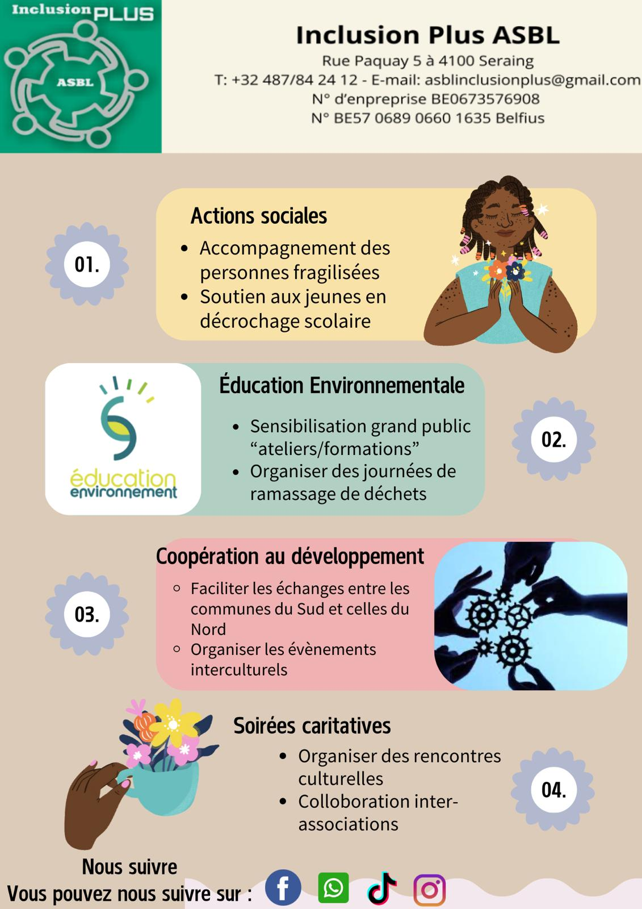

À Propos de Inclusion Plus Asbl

Fondée le 28 mars 2017, Inclusion Plus Asbl est née de la volonté d’un groupe de citoyens passionnés et déterminés à promouvoir l’inclusion, la solidarité et le vivre-ensemble dans notre société.
Notre mission s’articule autour de trois axes majeurs :
- Favoriser l’inclusion sociale en créant des ponts entre les différents acteurs de la communauté.
- Protéger et valoriser la biodiversité par une approche respectueuse de l’environnement et la promotion d’actions durables.
- Renforcer la coopération au niveau local et international afin d’initier des projets de développement porteurs de changement et de bien-être pour tous.
La photo ci-contre illustre nos objectifs et nos engagements au quotidien. Chaque initiative, chaque projet incarne une part de notre rêve d’un monde plus juste et plus solidaire. Rejoignez-nous dans cette aventure !